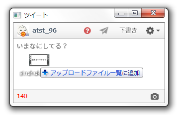

Liberfy for Windows
トップ
ダウンロード
ライブラリ
機能
ヘルプ
機能の紹介

MP4動画のアップロード
画像と同じようにでツイートにMP4動画を添付することができます。
※ 動画の解像度が1280×720以下、かつフレームレートが40fps以下、長さが30秒以内である必要があります。
[詳細]
バルーンと音声での通知
バルーンや音声通知で、他の作業をしながら、リプライやフォロー、リツイートなどを把握することができます。
自動起動と常駐